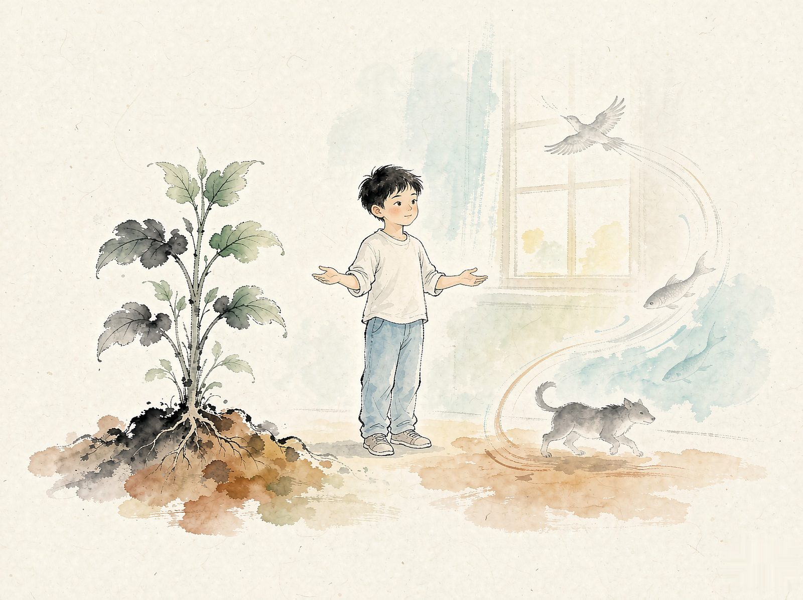

此动物，能飞走
对比前文阴阳：植为静阴，动物为动阳；飞为阳之扬升，走为阳之游行；一升一游，合于气机流转。俗见勘破：不要局限字面，以为只有飞鸟走兽。经文以飞走二字统摄：鱼之游、虫之爬，都归入这一类「自主移动」的功用；飞走是象，核心是有觉知、能主动择境，和草木被动待缘截然不同。
前面我们知道天地之间，还有虫、鱼、鸟、兽这些生命。
经文总结这一类动物：它们能够飞翔、奔走，自主去往别处。
鸟儿振翅飞上云天，野兽奔跑穿行山林，小虫匍匐爬行，鱼儿在水里游来游去。

草木只能守在一处，等着雨水阳光；而虫鱼鸟兽，会主动去找食物，躲避危险，挑选适合自己生存的地方。
能飞、能走，代表它们有感受、有选择。但无论飞得多高、走得多远，依旧离不开天地的承载滋养。

落到心上理解：飞走是自在迁移的相，这份「能选择」，就是觉知的显现。但能选择，不等于自在解脱：鸟兽会追逐食色、畏惧灾患，依旧被外缘牵引，随境流转。我们人同样有选择的能力，区别在于：能不能觉察自己的取舍，不被欲望牵着盲目奔走。
以为能够自由去往哪里就是真正自由，不断追逐外境；羡慕奔走翱翔，厌弃安住不动。
飞、走只是缘起的能力，本心才是真正的主人；动、静皆是相，本体无分动静高下。
- 动物的特点，在于能够自主飞翔、奔走、游动。
- 可以主动选择环境，是觉知带来的能力。
- 有选择，不等于不受束缚；鸟兽依旧被生存、习性牵引。
- 动和静没有好坏，只是生命缘起显现的不同形态。
一、勘俗见。这一句是承接静植、有情的分界点，完成「静→动」的生命序列。不是科普动物运动，是观察「选择权」从这里显现。
二、现代对照。可以引导孩子看见：会跑会飞固然灵动，但也会有追逐、恐惧、焦虑；安住和奔走，各有因缘。
三、承接常变主线。飞走的方式千差万别，物种形态代代演化，是可变之相；觉知取舍这个底层功用，是造化之常。
四、承接教与学二分。家长引导区分「能力」和「自在」，不把自由等同于到处奔走，属施教一侧；孩子慢慢觉察自己的选择、不盲目追逐，是自主修习。
接上选择力练习：身可迁，心勿随境狂奔。
此动物，能飞走
一 · 字义与句读动，移也；飞走，举其典型之相，统摄游、爬、潜等一切自主迁行。
全句释义：虫鱼鸟兽这一类有情生命，具备觉知，能够飞翔奔走，自主改换所处之境。以此收束动物一类的特质，和前文植根不动的植物形成清晰对照，阴阳动静圆满。
二 · 命题考辨（一）区分两层「能动」。草木之动：随风摇摆、随季荣枯，属于外缘驱动，被动变化，无自主拣择。动物之飞走：内有苦乐觉知，主动趋利避害，是内生的选择。这正是经文排布次序的深意：先讲无情依缘，再讲有情择境，层层递进，最后推向人——人拥有觉知，更有觉照自省的可能。
（二）对照当下现代语境。现代生物学讲趋性、本能、迁徙行为。经文不取本能机制，而是取哲学之象：有能力选择去处，是一把双刃剑。鸟兽凭本能择境，依旧困在习性链条之中；人拥有选择，既可向外追逐，也可以向内观照。这一句，悄悄埋下后文「人」的伏笔。
（三）般若范式互参。飞走、动静、有情无情，全部是缘起假名。联动空杯模型：虚空自性为本体，外缘因缘和合，显现出「静植」与「能动有情」两类相；能飞能走，只是缘起起用的差别，虚空本体不会因为生命可以迁移而改变。
呼应「本乎数」：飞升为阳，走游为阴，一阴一阳，以飞走两象概括一切迁变之相；数是方便归类，不可执实。
（四）延伸义理。般若常说「众生流转」，流转正是这「飞走」的广义版本：众生在六道之中，随业奔走，随境迁流。能飞走，即是能流转；修行，就是在这本来会奔走的觉知之中，生出一份不随境跑的觉照。不是废掉选择、不再行动，而是虽行而无住。
三 · 跨典互参《道德经》：「飘风不终朝，骤雨不终日。」一切迁动之相，皆不能常驻。
《庄子·逍遥游》鲲鹏之喻，以高飞远走，点破大小之见：飞走只是相，逍遥不在远游。
串联前文：从国土区划、四民五常，到草木、有情、飞走；一路向外铺展，看见一切动静之相，皆是缘起。
四 · 与前后课的张力呼应「人不学，不知义」：义在于明辨迁动之相，懂得「能选择」不等于自在。
呼应「玉不琢，不成器」：打磨自心，就是在一切取舍奔走之中守住觉照，不随境流转。
呼应「教之道，贵以专」：见闻之学，由静植转入有情迁流，为理解人心、烦恼、修行铺垫根基。
次第链条继续延伸：…… → 有虫鱼，有鸟兽 → 本课
一、本能的趋避，和人的自主抉择，分界在哪里？
二、若「飞走」即是流转，修行的行动、行善利生，算不算一种奔走？如何做到行而无住？
三、无情没有流转之苦，是不是反而更近于道？